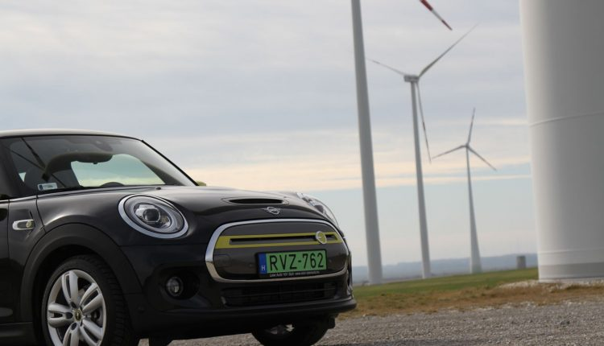

Mini Cooper SE je prvým Äisto elektrickým modelom najÅ¡týlovejÅ¡ej prémiovej znaÄky. A teraz prichádza aj na náš trh.

Autá znaÄky MINI odjakživa elektrizovali. Doteraz vÅ¡ak iba symbolicky. Dizajnom, Å¡armom, Å¡týlom, jazdnými vlastnosÅ¥ami⦠Odteraz vÅ¡ak MINI zaÄÃna elektrizovaÅ¥ svoje modely fyzicky, na slovenský trh uvádza prvý elektrifikovaný model â Cooper SE. Na pohon slúži elektromotor so 135 kW (184 k) a 270 Nm.
Keby som niÄ viac nepovedal, tak tieto parametre musia uspokojiÅ¥ aj nároÄnejÅ¡ieho motoristu. Ibaže tých 185 konÃkov a 270 Nm sú elektrické, takže na povely plynu reagujú bez najmenÅ¡ieho oneskorenia a energicky od prvého momentu dotyku s plynom. Elektrické MINI je zhruba o 145 km Å¥ažšie ako trojdverový Cooper S s automatickou prevodovkou Steptronic, no práve vzhľadom na Å¡ialené reakcie elektromotora sa tá vyÅ¡Å¡ia hmotnosÅ¥ potiera. Verte mi, mám to odskúšané v rámci predvádzacÃch jázd v Bratislave a okolÃ. Z nuly na stovku to MINI Cooper SE zvládne za 7,3 sekundy. Priznajme si vÅ¡ak farbu, maximálna rýchlosÅ¥ je obmedzená na 150 km/h, ale v reálnom živote mimo nemeckých diaľnic to plne postaÄuje. MINI využÃva jednopedálové ovládanie, to znamená, že intenzitu rekuperácie ovládate tým ako veľmi uvoľnÃte plynový pedál. KeÄ viete túto funkciu využÃvaÅ¥ a niÄ mimoriadne sa pred vami nestane, tak sa brzdového pedála ani nemusÃte dotýkaÅ¥. Napriek tomu máte dispozÃcii dve základné úrovne rekuperácie â vysokú a nÃzku. Aj v nich platà jednopedálové ovládanie, ale ide o to, že pri slabÅ¡ej úrovni rekuperácie na úplné uvoľnenie plynu auto rekuperuje menej, na vyÅ¡Å¡iu úroveÅ zasa viac. Okrem toho máte k dispozÃcii jazdné režimy Green+, Green, Mid a Sport. Samotný akumulátor je uložený v tvare T v podlahe â pod zadnými sedadlami a v pôvodnom tuneli uprostred karosérie, takže nezasahuje do kufra. LÃtiovo-iónový akumulátor má kapacitu 32,6 kWh a vystaÄà na 235 â 270 km. NabÃjaÅ¥ ho môžete jednosmerným aj striedavým prúdom s konektormi typu Type 2 a CCS Combo 2. Vlastné zabudované nabÃjacie zariadenie má výkon 11 kW, ale auto ako také zvládne rýchlonabÃjanie s výkonom 50 kW. Pomocou neho sa na 80 percent nabije za 35 minút.
MINI Cooper SE sa v základnej výbave predáva za 32 950 eur, ale viete si na neho uplatniť štátu dotáciu vo výške 8 000 eur.
